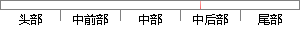

例如：在GMM中，我们就需要确定(x;
片段位置图

相似结果|
相似片段 1：端下导磁端图2.5 分段圆柱永磁铁的布置形式162.2.3 多分段圆柱永磁铁偏置磁场计算在确立了永磁铁的布置形式后，接下来就需要确定永磁铁的具体尺寸。由于考虑结构的紧凑性，我们选取的永磁铁的半径尺寸
相似片段 2：exp一@一p∥可1(x一Ⅳ训(3-12)令鲈何竹国，GMM共有M个单高斯模型，现在，我们就需要通过样本集x来估计GMM的所有参数：0=(01，?，㈨T。样本X的概率公式为：t(xlo
相似片段 3：该高斯分量的像素个数与总的像素个数的比值来确定。(2)迭代最小化i． 对每个像素分配GMM中的高斯分量(例如像素n是目标像素，那么把像素n的RGB值代入目标GMM中的每一个高斯分量中，概率最大的那个
相似片段 4：其次，当确定了各个类别概率分布的参数化形式以后，我们需要通过一些训练数据去估计这些参数，这个时候就需要训练算法，通常会以最大化P(XICt)作为目标函数，这种方法被称为最大似然估计
相似片段 5：磁通量嚷F；第二减小线圈内部，围绕在GMM棒圆周外，与GMM棒等长的空气区域的磁通量屯”由式(2-31)，对于给定的线圈，线圈的匝数和工作电流已经确定，如果要增大等效磁通量，就需要减小磁回路中的总磁阻。也
|
※ 片段修改建议 ※
近似词参考：- 例如：比方
- 我们：咱们
- 确定：肯定
系统自动生成语句：比方：在GMM中，咱们就需要肯定(x;
注：本片段修改建议为系统自动生成，仅供参考。